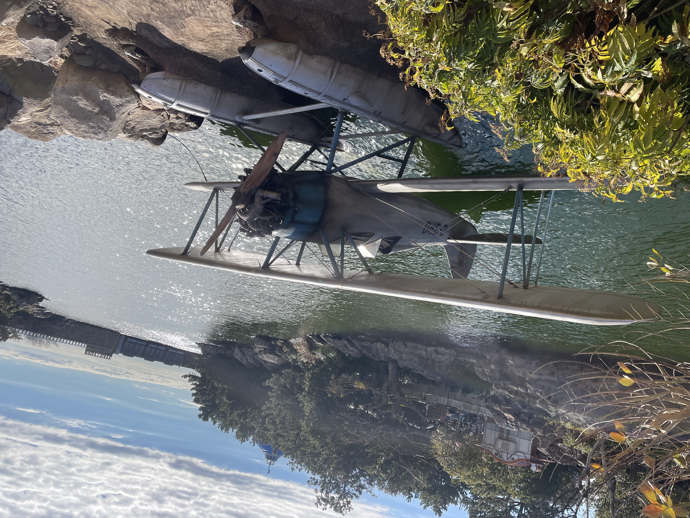
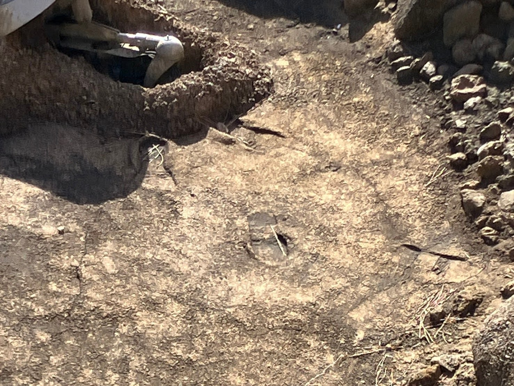
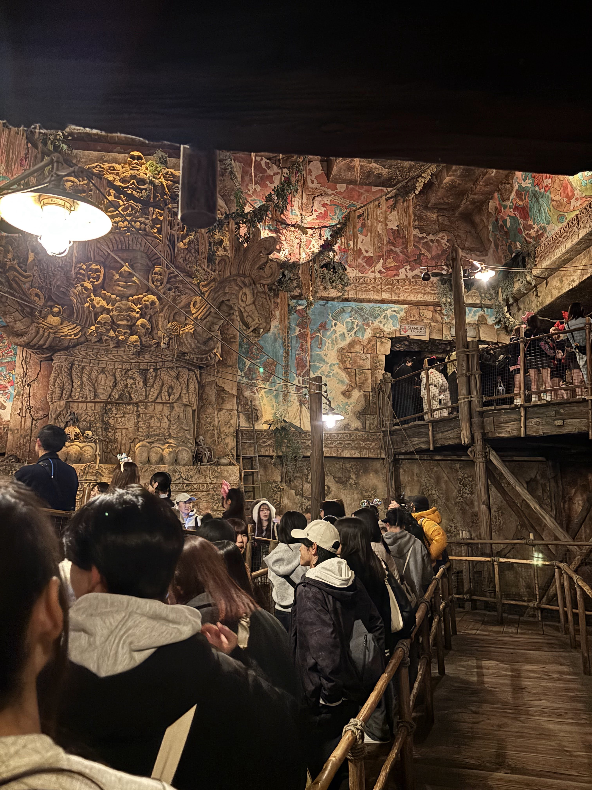
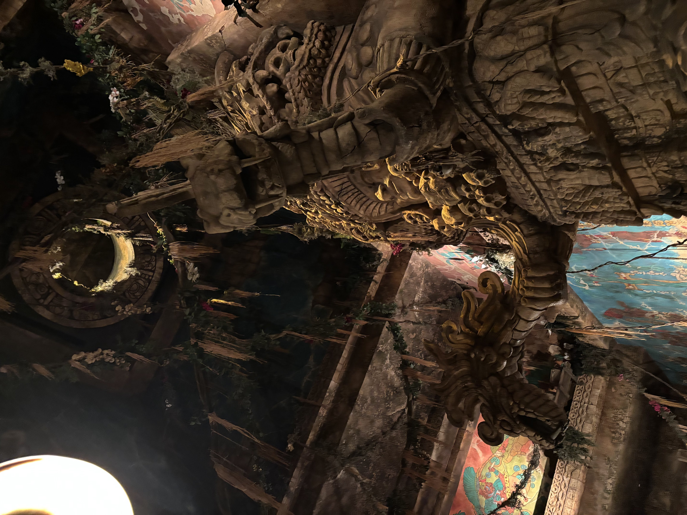

Indiana Jones

I. 失われた河の伝説
1930年代の中央アメリカ、うっそうと生い茂るジャングルの奥地に広がる遺跡発掘現場「ロストリバーデルタ」。かつて1880年代にこの地を襲った大ハリケーンによって、せき止められていた川が氾濫し、突如として出現した「エル・リオ・ペルディード（失われた河）」がすべての始まりでした。
この河の出現によってジャングルが切り拓かれ、探検家や一獲千金を狙う冒険家たちが続々と拠点を築き始めます。その中で、考古学者インディ・ジョーンズ博士は、神聖な神殿に隠された禁断の伝説**「若さの泉（Fountain of Youth）」**を発見したのです。私たちは、彼の助手であるパコが密かに企画した「若さの泉を探す魔宮ツアー」の観光客として、この神秘的な地へ足を踏み入れることになります。
II. 水上飛行機とインディ博士の「足跡」
ロストリバーに浮かぶ、かつてインディ博士がこの地へやってくる際（そして危険から逃れる際）に使用した1機の水上飛行機。写真にしっかりと捉えられているこの機体には、ジョージ・ルーカスとディズニーの粋な「映画の枠を超えた仕掛け」が隠されています。

✈️ 機体に刻まれた「C-3PO」の機体番号
よく見ると、水上飛行機の機体の側面には、はっきりと青い文字で**「C-3PO」**とペイントされています。これは映画『スター・ウォーズ』の同名ドロイドから名付けられた、有名なイースターエッグ（隠しネタ）です。
さらに驚くべきことに、映画『レイダース/失われたアーク《聖櫃》』の冒頭で、原住民の襲撃から逃れるためにインディ博士が飛び乗ったあの水上飛行機の登録番号が、実際に「OB-C3PO」だったのです。映画とアトラクションの時間が、この機体によって現実のものとなっています。

さらに、この水上飛行機が停泊する川岸の粘土質の地面をよく見ると、**「ぽつんと遺された、インディ博士のブーツの足跡」**（上の写真）を見つけることができます。これは、水上飛行機から降り立ったインディ博士が、急いで神殿へと向かった際に泥に埋まった本物の足跡です。彼がさっきまでここにいたという、生々しい冒険の息吹を感じさせるイマジニアの素晴らしい演出です。
III. 魔宮の罠と「生贄の祭壇」
観光用ジープに乗り込んだ私たちは、ジョーンズ博士の警告「守護神クリスタルスカルを怒らせるな！」という言葉もむなしく、魔宮の最深部へと迷い込んでしまいます。行く手を阻むのは、何千年も張り巡らされた古代の防衛システムと、クリスタルスカルの呪いです。


写真に記録されている不気味な骸骨と大蛇に囲まれた部屋、それこそが古代の部族が神への捧げ物を行ったとされる**「生贄の祭壇（Altar of Sacrifice）」**です。天井からは気味の悪い蔦が垂れ下がり、石壁には生贄の儀式の様子が赤や青のフレスコ画で鮮やかに描かれています。この呪われた祭壇の空気に触れた瞬間、ジープは制御を失い、クリスタルスカルの放つ不気味なレーザー光線や、巨大な岩石が転がり落ちる罠の恐怖へと巻き込まれていくのです。
IV. 歴史への敬意、そして「略奪王」との決定的対比
ロストリバーデルタの物語を語る上で欠かせないのが、お隣の遺跡「レイジングスピリッツ」や、アメリカンウォーターフロントの『タワー・オブ・テラー』との対比です。
レイジングスピリッツの現場には、あの強欲な大富豪**「ハリソン・ハイタワー三世」がこの地の貴重なコレクションを略奪して運ばせようとした「HOTEL HIGHTOWER（ホテル・ハイタワー行き）」**の木箱が今も置き去りにされています。
🔎 二人の「探検家」が描く、ディズニーの真意
インディ・ジョーンズ博士は、「歴史を守り、現地の文化や神聖なルールに最大の敬意を払いながら学術的に調査する」という**「本物の考古学者」**です。対して、ハイタワー三世は「現地の信仰を嘲笑し、すべてを盗み去り、自分の富を誇示する」という**「強欲な略奪者」**でした。
同じロストリバーデルタに遺されたふたつの発掘現場は、**「歴史への敬意（インディ）」**と、**「歴史への冒涜（ハイタワー三世）」**という、ディズニーシー全体の光と影のメッセージとして描かれています。インディ博士は精霊の怒りを買いながらも九死に一生を得て生き延びましたが、掟を破り続けたハイタワー三世は、のちにシリキ・ウトゥンドゥの呪いによって行方不明（失踪）となります。この人間性の対比を知っていると、パークの景色がさらに深く見えてくるはずです。